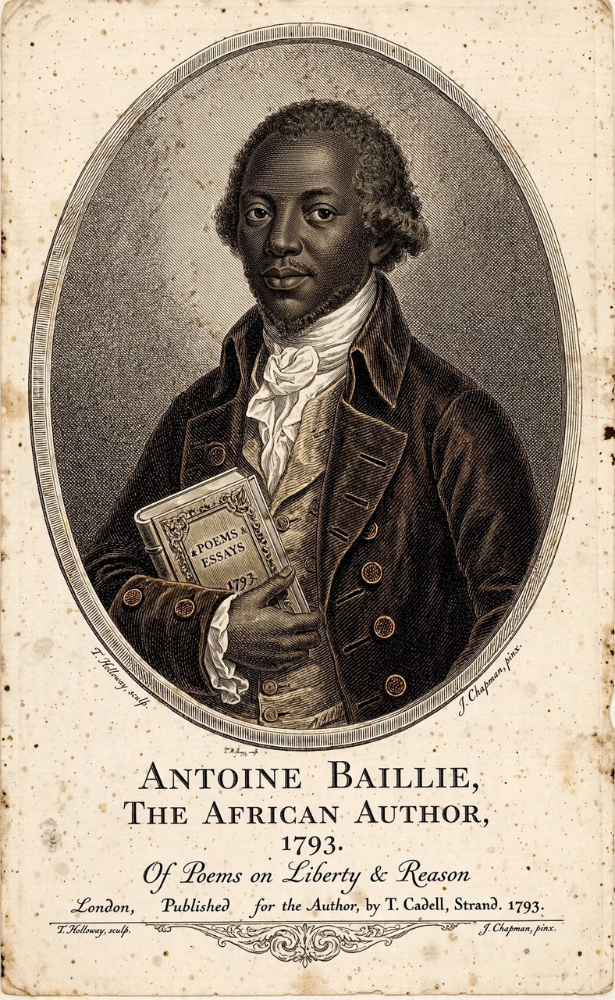

Olaudah Equiano
| Olaudah Equiano | |
 | |
| Born | c. 1745, Essaka, Kingdom of Benin (present-day Nigeria) — disputed; possibly South Carolina |
|---|---|
| Died | 31 March 1797 (aged about 52), London, England |
| Other names | Gustavus Vassa |
| Occupation | Writer, abolitionist, merchant, explorer, seaman |
| Known for | The Interesting Narrative of the Life of Olaudah Equiano (1789) |
Olaudah Equiano (c. 1745 – 31 March 1797), known for most of his life as Gustavus Vassa, was a writer and abolitionist of Igbo origin. Enslaved as a child in Africa, he was transported to the Caribbean and sold in Virginia, then bought by a British naval officer, Michael Henry Pascal, who renamed him Gustavus Vassa after the Swedish king. He travelled the world with Pascal, serving in the Seven Years' War, and later worked as a seaman and merchant, eventually purchasing his freedom in 1766.
The Interesting Narrative
Settling in London, Equiano became a leading figure in the British abolition movement, a member of the Sons of Africa, an association of Africans in Britain campaigning against slavery. In 1789 he published his autobiography, The Interesting Narrative of the Life of Olaudah Equiano, or Gustavus Vassa, the African, one of the earliest and most powerful first-hand accounts of the Middle Passage and of enslavement. Published by subscription and promoted on speaking tours, it went through nine editions in his lifetime and was a major influence on the movement that abolished the British slave trade in 1807.
Later life
Equiano worked on the ill-fated Sierra Leone settlement expedition of 1786–87, exposing corruption among its organisers, and campaigned against the case of the slave ship Zong, whose crew had murdered 132 enslaved Africans for insurance money. He married Susannah Cullen in 1792; their daughter Anna Maria survived him. He died in London in 1797, a comparatively wealthy man. Scholars have debated whether he was born in Africa, as he claimed, or in South Carolina, as two documents suggest; his narrative's descriptions of Igboland remain foundational to African diaspora literature alongside writers such as Phillis Wheatley.